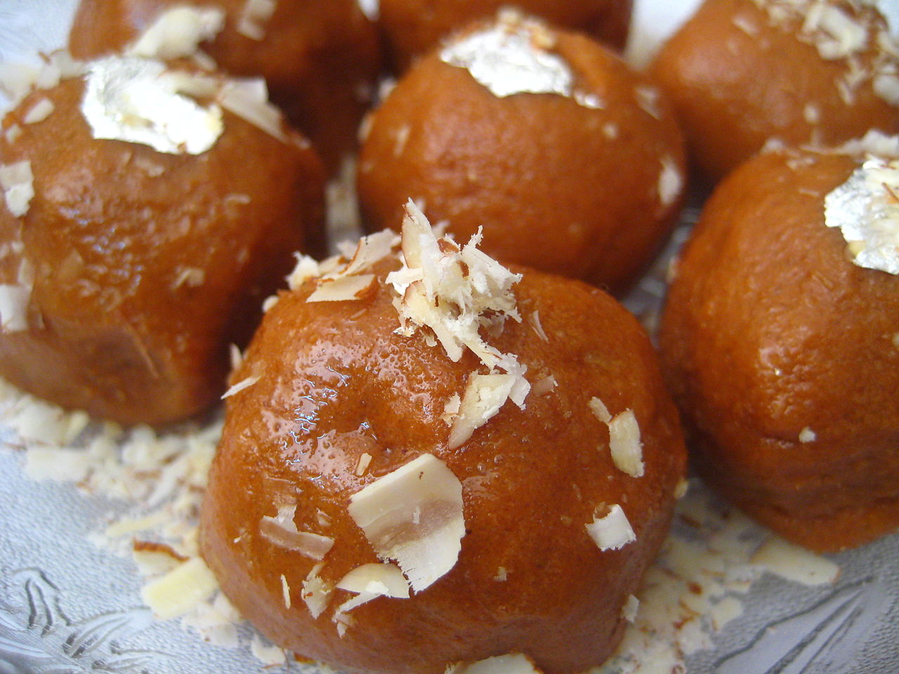
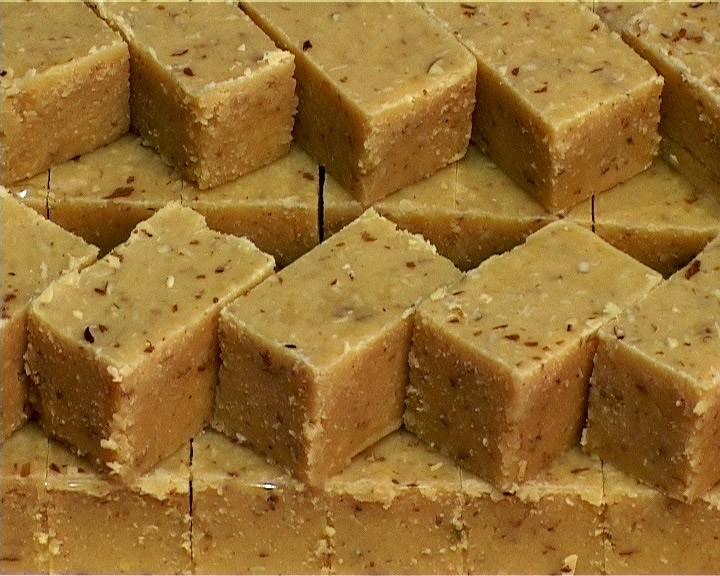
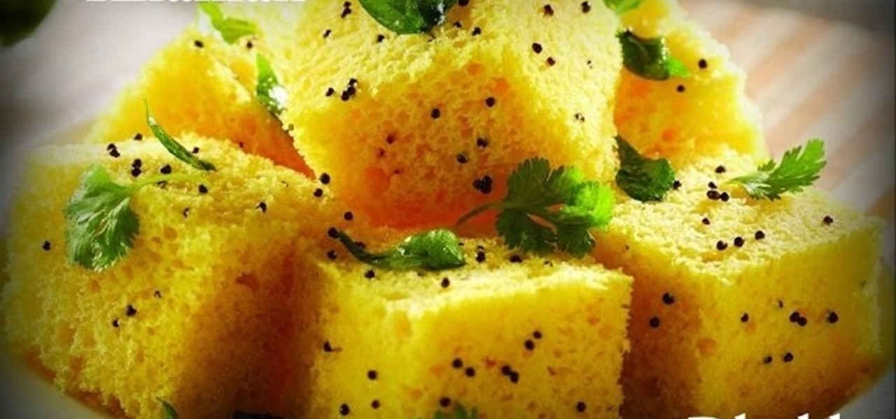
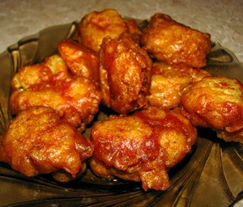
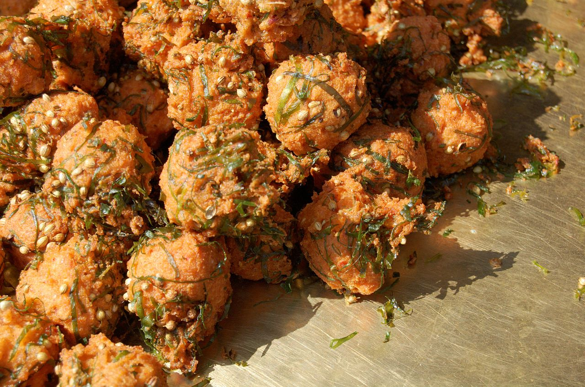

Нут (дезі)
Нут - цінна зернобобова культура, так як сприяючи накопиченню органічної речовини і азоту в ґрунті, він поліпшує його родючість, покращує структурні властивості. Крім того він є цінним джерелом рослинних білків. Як бобова культура нут здавна відомий землеробам Стародавніх Греції, Риму, Єгипту; в Середній Азії, Закавказзі, з Південно-Західної Азії. За інтенсивної технології нут може забезпечити до 3,0-3,5 т/га і більше зерна. Тому за останні роки інтерес до цієї культури в Україні зростає і площі посівів її в Степу розширюються.
По об’єму виробництва в світі нут займає друге місце серед зернобобових культур (рис. 1).
Виробництво його в світі за останні роки коливається від 10 млн. т. до 14,2 млн. т. Найбільше нут вирощують у таких країнах як Індія, Австралія, Пакистан, Туреччина, М’янма, Ефіопія, Іран, Мексика, Канада, США (табл.). Основна кількість нуту вирощується в Індії і там же і споживається. Серед цих країн Австралія, Канада вирощують нут практично лише для експорту. Залежно від зовнішнього вигляду насіння увесь нут поділяють на два види «кабулі» і «дезі». Нут кабулі має насіннєву оболонку білого або кремового кольору, вона тонка і важко відділяється від сімя’долей, насіння може бути як крупним (у вигляді баранячої голови), так і дрібним круглої форми. У нуту дезі насіннєва оболонка коричневого або чорного кольору різних відтінків, товста і груба. Маючи різні фізичні властивості насіння ці види нуту відповідно мають і різні напрямки використання і різні вимого до продукції. Нут кабулі, як правило використовуються у цілому виді і відповідно більше ціниться насіння ціле, крупне з неушкодженою насіннєвою оболонкою природного білого чи кремового кольору. Споживається головним чином в країнах Середземномор’я (Європа, Північна Африка, Туреччина, Іран).
 |
 |
| Нут "дезі |
Нут "кабулі" |
Нут дезі в основному переробляється на dal (це розколені і очищені від насіннєвої оболонки сім’ядолі) або besan (мука з нуту). В результаті такої переробки значно збільшується його поживність, він краще засвоюється організмом і скорочується період його приготування. Тому вимоги до зовнішнього вигляду насіння у нього не такі жорсткі; головним для цього виду нуту є вихід сім’ядолей (відділяємість насіннєвої оболонки від сімядолей) і чистота насіння. В Індії, Пакистані, М’янмі 90 % посівів нуту становить нут дезі, в Автралії - 80 % площ, значні площі нут дезі займає в Канаді. Таким чином, основна кількість вирощуваного у світі нуту є дезі - до 70 %. В середньому ціна на нут дезі дещо менша від кабулі. Проте різниця може значно коливатися по роках. Так, у 2014 році дезі оцінювався в 344 долари США за тонну, крупний кабулі (9 мм і більше) - 577. У 2015 році одну тону дезі продають уже за 584 долари, а кабулі - 650 доларів за тонну.
Основні виробники нуту в світі і їх продукція, т.
Країни |
2010 |
2011 |
2012 |
2013 |
2014 |
Індія |
7480000 |
8220000 |
7700000 |
8832500 |
9880000 |
Австралія |
602000 |
513338 |
673371 |
813300 |
817200 |
Пакистан |
561500 |
496000 |
291000 |
751000 |
750000 |
Туреччина |
530634 |
487477 |
518000 |
506000 |
450000 |
М’янма |
441493 |
473102 |
500000 |
490000 |
492300 |
Ефіопія |
284640 |
322839 |
409733 |
249465 |
458682 |
Іран |
267768 |
290243 |
315000 |
295000 |
275310 |
Мексика |
131895 |
72143 |
271894 |
209941 |
171665 |
Канада |
128300 |
90800 |
161400 |
169400 |
123000 |
США |
87952 |
99881 |
151137 |
157351 |
127000 |
Світ |
10897040 |
11497054 |
11613037 |
13102023 |
14239010 |
Виробництво нуту основними країнами світу в 2014 р.
Майже 2/3 усього нуту виробляється і споживається в Індії. І це в більшості нут "дезі". Торгівля і споживання продуктів переробки нуту «дезі» займає великий сегмент ринку на Індійському субконтиненті. Основну частину нуту там переробляють на «dal». Він має важливу перевагу щодо цілого зерна. Його не потрібно замочувати перед приготуванням, так, як він не має насіннєвої оболонки, і тому може набухнути в декілька хвилин. І має значно коротший період приготування.
 |
| Чана дал (очищені від насіннєвої оболонки і розколені сімядолі нуту) |
Для його приготування насіння нуту замочується для підвищення його вологості до 25-30 %. Після цього воно висушується до вологості 15-17 %. В результаті такого процесу насіннєва оболонка значно легше відділяється від сімя’долей. Після цього він піддається шелушінню і розколюванню.
Варити «dal» можна по різному до м’якого стану чи то до повного розварювання залежно від того як планується його споживати. Якщо dal подають як гарнір до зелених овочем чи до м’яса його варять до м’якої консистенції. Якщо плануються його давити, dal варять до дуже м’якого стану. Пюре з «далу» використовують як суп або соус. В індії варений dal часто перемішують з нерафінованим цукром (djaggery) і цю субстанцію використовують як наповнювач до снеків. Використовують його також для приготування солодких напоїв змішуючи пюре з молоком і цукром. Нут найкраще гармонує з цукром серед бобових культур. Тому солодощі і десерти з нього дуже популярні на Індійському субконтиненті.
Дуже популярний в індії та інших країнах цього регіону смажений dal (chutneys). «Чатні» часто споживають з вареним рисом. Його часто використовують для приготування різноманітних закусок.
Besan - мука з нуту, наступний продукт дуже популярний на Індійському субконтиненті. Він займає там великий сегмент ринку. Нут переробляють в besan на млинах. Besan розділяється на категорії згідно типу помелу. Такі як, дрібний помел, середній помел, грубий помел. Ці продукти відповідно мають різні напрямки використання. Мука використовується для виготовлення місцевого фастфуду, закусок, солодощів (ladoos, burfis).
 |
 |
| Ладу з бесану |
Бурфи з бесану |
Один з улюблених напоїв в літній час Satoo. Його йотують шляхом змішування жареної муки з нуту з піджареною мукою з ячменю та пшениці.
 |
Dhokla (паровий хліб), інший улюблений продукт, його готують з нутової муки і рису, протягом ночі воно ферментується і готується на пару, його вживають в багатьох частинах індії на сніданок. Муку з нуту використовують для приготування тіста з якого випікають різні закуски які подаються в різноманітних ресторанах і кафе фастфудах. |
Дхокла з бесану
 |
 |
| "Пакорас, Цюріх (Германія)" |
"Пакорас, Джайпурr (Індія)" by ampersandyslexia - India, https://commons.wikimedia.org/wiki/File:Pakoras
_in_Jaipur.jpg#/media/File:Pakoras_in_Jaipur.jpg |
Pakoras - дуже популярні в Індії. Також ця страва набуває все більшої популярності в Америці, країнах Європейського союзу та Китаї. Для його приготування муку з нуту змішують з водою і готують злегка рідку пасту. Різноманітні овочі такі як шпинат, цибуля, картопля, перець, капуста змішують з цією пастою для приготування різних Pakoras.
Хліб із нуту Chapatti також дуже популярний в Індії і інших країнах цього регіону (Пакистан, Шріланка, Бангладеш, Непал). Його готують із суміші муки з нуту та пшениці. Які змішують у різних співвідношеннях 1:1, 1:3, 1:5. Інколи Chapatti готують лише з муки з нуту.
Біологічні особливості
 |
Нут однорічна рослина, досить холодостійка, мінімальна температура проростання насіння 4-5 ºС. Звичайні сорти, посіяні весною, можуть витримувати заморозки до -7ºС. Рослини нуту висотою 30-100 см, з прямостоячим стеблом з багатьма гілками. Гілкування починається біля основи. Кількість стебел може бути різною залежно від густоти стояння рослин. Загалом нут досить добре кущиться. Листя складне, не парно-пірчасте, складається з 11-17 листочків; їхня кількість різна у залежно від сорту і від місця знаходження на рослині. Багатолисточкове листя знаходиться у середній частині стебла. Форма листочків еліптична або зворотньо яйцевидна, довжиною від 9,3 до 20.7 мм. Ширина від 3,5 до 11,3 мм. Колір листя зелений, сизо-зелений, з фіолетовим відтінком (у сортів, що належать до типу дезі) Коренева систем стрижнева, добре розвинена, проникає в ґрунт на глибину до 1,5 м, але основна маса коренів розміщується в шарі до 30 см.
Квітки 6-10 мм, у нуту дезі фіолетового кольору у кабулі частіше білі, парус із синіми прожилками. На квітконосі за звичай розвивається 1-2 квітки. Цвітіння починається з нижніх гілок і за сприятливих погодних умов продовжується аж до самого дозрівання. Урожай формується в основному на гілках нижнього і середнього ярусів.
|
Плід - двустворчатий біб, овально подовженої, овальної або ромбічної форми, довжиною 1,5-3,5 см, з пергаментним шаром, при дозріванні не розтріскується. Стиглі боби мають різні відтінки: у біло-насіннєвих сортів солом’яно-жовтого кольору, у зеленонасіннєвих – зеленуваті, темно насіннєвих – сизо-фіолетові.
Насіння характеризується наявністю носика, поверхня зморшкувата або гладенька. Колір шкірки насіння може бути білим, жовтим, рожевим (кабулі); сірим, зеленим, світло-коричневим, коричневим, чорним (дезі). Сім’ядолі зазвичай жовті, різної інтенсивності, у дуже рідких випадках зустрічаються сорти з зеленими або оранжевими сім’ядолями. Маса 1000 насінин коливається від 60 до 700 г. Вегетаційний період нуту триває 80-120 діб залежно від сорту та умов вирощування. За фотоперіодичною реакцією нут відноситься до культур довгого дня, тому при більш пізньому посіві фази вегетаційного періоду рослин скорочуються і зменшується врожай.
Рослини нуту є типовими ксерофітами, вони мають дрібне листя; клітини різних органів виділяються високим осмотичним тиском. Листя і боби вкриті волосками, які виділяють багато щавлевої кислоти, що захищає їх від ряду шкідників.риятливих погодних умов, продовжується аж до самого дозрівання. Урожай формується в основному на гілках нижнього і середнього ярусів. Плід – двусворчатий біб , довжиною 7-10 см, з 10-12 насінинами, коричневого або чорного кольору. Насіння має овальну продовгувату форму, 3-4 мм в діаметрі, довжиною до 5-6 мм, маса 1000 насінин 20-90 г. Насіннєва оболонка зеленого або жовтого кольору різних відтінків.
Технологія вирощування.
Технологія вирощування нуту досить проста, в цілому вона майже не відрізняється від технології вирощування гороху. Такі ж відповідно і витрати на вирощування. В окремі несприятливі роки витрати можуть збільшуватися за рахунок додаткового внесення засобів захисту рослин. Однак ці витрати компенсуються значно більшою реалізаційною ціною.
Вибір поля і місце в сівозміні.
Під нут потрібно виділяти чисті від бур'янів, добре вирівняні площі, тому що він на початку росту розвивається дуже повільно, у зв'язку з чим сильно пригнічується бур'янами. В деякій мірі ситуацію може виправити якісна підготовка ґрунту і застосування гербіцидів. Але слід пам'ятати, що нут має високу чутливість до гербіцидів і не має жодного гербіцида, який би можна булло застосовувати для боротьби з широколистими бур’янами по сходах нуту.
Кращими попередниками для нуту є зернові культури. Якщо на площі, де планується його висівати, щоб нут міг забезпечити себе азотом самостійно, його насіння потрібно обробляти бульбочковими бактеріями. Штами які застосовуються на горосі або сочевиці, для нуту не підходять. Потрібно застосовувати, бульбочкові бактерії, призначені для нуту.
Полив. Нут добре відкликається на зрошення. Але слід мати на увазі, що полив методом дощування може сприяти поширенню грибкових хвороб. Тому краще проводити полив по борознах, або при допомозі крапельного зрошення.
Удобрення.
При сівбі нуту, як і на інших культурах при застосуванні добрив потрібно в першу користуватися результати аналізу ґрунту на вміст потрібних хімічних елементів. Проте слід мати на увазі, при високому вмісті азоту в грунті азотфіксація пригнічується, при значній кількості доступної вологи відбувається надлишковий ріст вегетативної маси, а кількість бобів і насіння при цьому буде досить незначною.
Азот Для формуванню урожаю нуту 2 т/га потрібно в середньому 100 кг азоту. При нормальній азотфіксації нут може забезпечити до 50-80 % своєї потреби в азоті за рахунок фіксації азоту бульбочковими бактеріями. Проте, якщо вміст азоту в ґрунті менше 17 кг/га, початковий ріст рослин буде повільним, рослини будуть жовтими протягом певного періоду часу. Тому при сівбі на таких полях бажано вносити до 20 кг/га азоту.
Фосфор Важливий поживний елемент для нуту. Для формування урожаю насіння нуту 2 т/га потрібно 36 кг Р2О5. Фосфор сприяє кращому розвитку кореневої системи, а відповідно і кращому загальному розвитку рослин. Також фосфор грає важливу роль в азотфіксації, та сприяє швидшому і більш дружньому дозріванню рослин. Тому, якщо результати аналізу ґрунту указують на недостатню кількість фосфору в ґрунті, потрібно вносити фосфорні добрива. Максимальна безпечна доза фосфатів, яку можна вносити з насінням 16,8 кг/га Р2О5. Дозу добрив, що будуть розміщуватися поряд з насінням потрібно знижувати при посіві в недостатньо вологий грунт. Для мінімізації токсичного ефекту можна збільшувати дозу внесення фосфору під попередню культуру, або вносити його з осені. Якщо вміст фосфору в ґрунті високий то внесення грибкового інокуляту, який підвищує доступність фосфору в ґрунті, може замінити внесення стартової дози фосфорних добрив.
Калій. Зазвичай міститься в достатній кількості в більшості ґрунтів України. Проте перед усім потрібно керуватися результатами ґрунтового аналізу щодо вмісту цього елементу. Близько 85 кг/га К2О потрібно для формування 2 т/га урожаю насіння нуту. Якщо вміст цього елементу в ґрунті недостатній, принаймні мінімальна кількість цього елементу повинна бути внесена при сівбі разом з насінням.
Сірка. Також потребується в досить суттєвій кількості для розвитку нуту. Для створення урожаю 2 т/га насіння потрібно 9-11 кг/га сірки. Якщо результати ґрунтового аналізу показують на недостачу цього елементу в ґрунті, потрібно застосовувати мінеральні добрива, зокрема сульфат амонію який містить сірку в доступній для рослин формі.
Дефіцит мікроелементів на нуті зустрічається досить рідко.
Сівба Нут можна сіяти різними способами, залежно від наявних технічних можливостей та планованої технології вирощування.
За звичай нут сіють широкорядним способом із шириною міжрядь 45-70 см. До переваг цього методу належать:
- широкорядні сівалки як правило висівають точніше тому в результаті вдається сформувати більш рівномірний посів, що в результаті сприятиме більш дружньому дозріванню;
- рослини при такому посіві ростуть крупніші і їх легше збирати;
- економити кошти за рахунок стрічкового внесення фунгіцидів, інсектицидів та десикантів;
- за посушливих умов в широкорядних посівах рослини краще забезпечуються вологою;
- проводити боротьбу з бур’янами шляхом проведення міжрядних культивацій.
Сіяти нут можна і вузькорядним способом, з шириною міжрядь 15-30 см. При такому способі сівби:
- рослини швидше покривають землю і краще конкурують з бурянами;
- фіксація атмосферного азоту проходить ефективніше на 15-30 %;
- потенційна врожайність значно зростає і можна отримати більш високий урожай до 2 т/га.
Нут досить холодостійка культура, тому сіяти його потрібно після сівби ранніх ярих зернових, коли ґрунт прогріється до 5-6 °С. Поле, де планується посів, має бути добре підготовленим. Сівбу проводять на глибину 6-8 см, але при сухій погоді глибину загортання насіння можна збільшувати. Сіяти нут можна як звичайними зерновими сівалками з шириною міжрядь 15 см, так і стрічковим або широкорядним способами (на 45, 60 або 70 см). Від обраного способу сівби залежить і норма висіву насіння. Так при суцільному рядковому способі в умовах Степу України рекомендується 500-600 тис./га схожих насінин (8-10 насінин /пог. м.), при стрічковому - 400-450 тис./га (13-14 насінин /пог. м.), а при широкорядному – 300-350 тис./га (16-18 насінин /пог. м.)
Під час сівби потрібно контролювати щоб посівне обладнання доставляло насіння рівномірно і підтримувалася задана глибина заробки. Часта проблема у новачків при вирощуванні нуту - просіви в рядках, за якими слідують загущені ділянки, які виникають в результаті неоднорідного висіву. В результаті, на пропусках розвиваються бур’яни, а в загущених ділянках створюються сприятливі умови для розвитку грибних хвороб.
Догляд за посівами.
Захист від бур’янів. Нут слабо конкурує з бур'янами, а також відрізняється високою чутливістю до більшості гербіцидів, тому оптимальним є проведення боротьби з бур'янами в попередні роки, протягом ротації всієї сівозміни. Так, після збирання попередньої культури при підготовці поля можна внести гліфосат, як дешевшу альтернативу 2,4 Д. Якщо має місце сильна засміченість поля, то можна дещо відкласти сівбу і застосувати гліфосат за 2-3 тижні до посіву.
Офіційно у Перелік пестицидів дозволених до використання в Україні, жодного препарату, рекомендованого для використання на нуті, не внесено. Однак за багаторічним досвідом випробування багатьох препаратів на нуті можна рекомендувати деякі із зареєстрованих на інших зернобобових культурах. Як грунтові гербіциди рекомендується використання препаратів з діючою речовиною ацетохлор (Харнес новий, Трофі 2 л/га) або S-метолахлор (Дуал Голд 1 л/га) в суміші з прометрином (Гезагард 3 л/га). Ці препарати вносять перед сівбою, або відразу після, неї без загортання або з неглибоким загоратнням за сухого грунту. Недоліки препаратів цього класу є в недостатньому їх періоді дії (лише початковий період росту рослин), крім того ацетохлор негативно впливає на розвиток бульбочкових бактерій.
Досить ефективними є гербіциди з діючою речовиною Імазетапір (Півот, Капітан). Їх можна вносити як перед сівбою, так і після, але до появи сходів в дозах 0,5-0,7 л/га (бажано з неглибоким загортанням). Гербіциди цієї групи досить ефективно захищають нут від бур’янів, але є токсичними і для нуту, особливо в умовах підвищеної зволоженості. На рослинах нуту може спостерігатися пожовтіння, відставання в рості, різноманітні хлорози. Але з часом, залежно від погодних умов всі негативні дії гербіциду на рослинах нуту зникають. Крім того, гербіциди даної групи виявляють значну післядію на наступні культури. Малоефективні вони проти таких бур'янів як вівсюг, лобода біла, пупавка пахуча, латук.
Зенкор (метрибузин 480 г/л) – 0,3-0,6 л / га рекомендований для застосування на нуті після сівби але до сходів культури. Однак цей гербіцид малоефективний проти злакових бур'янів. Крім того, він дуже рухливий у грунті, особливо після сильних дощів; тому, якщо планується застосовувати цей гербіцид, то сіяти нут необхідно не мілкіше 5 см. Не можна застосовувати Зенкор на грунтах з низьким вмістом органічної речовини (менше 5%).
Для застосування після сходів на посівах нуту немає жодного рекомендованого препарату.
Для боротьби із злаковими бур'янами можна застосовувати більшість протизлакових гербіцидів, які є у Переліку пестицидів і агрохімікатів, дозволених до використання в Україні, відповідно до інструкції до них.
Боротьбу з бур'янами потрібно розпочинати якомога раніше, тому що нут слабо конкурує проти них, і в результаті їх дії істотно знижується врожай. Проводити боротьбу з бур'янами на нуті має сенс, поки він знаходиться у фазі до 10 вузлів (до цвітіння). Бур'яни, що з'являються після цвітіння, істотно на врожай не впливають. Нут дуже чутливий до гербіцидів, якими обробляють інші культури. Тому, перед внесенням гербіциду на нуті, треба ретельно промивати ємність для робочого розчину. Також потрібно обережно вносити гербіциди на полях, що знаходяться поряд.
Альтернативою хімічному захисту рослин від бур'янів є боронування легкими та середніми боронами до сходів і після сходів, поки рослини не досягли висоти 10 см. Найбільш ефективне боронування тоді, коли бур'яни перебувають у фазі ниточки. Боронування потрібно проводити по сухому ґрунті, у спекотні сонячні дні. На посівах з широкими міжряддями 45-70 см, ефективним способом боротьби з бур’янами є міжрядні рихлення. Перший обробіток міжрядь проводять через 5-7 днів після з’явлення сходів, а наступні — залежно від стану забур’яненості й ущільнення ґрунту.
Захист від хвороб.Найефективнішим способом боротьби з хворобами є дотримання правильного чергування культур у сівозміні. Бажано, щоб горох, гірчицю, сою, ріпак, соняшник не вирощували на тому ж полі в попередні або наступні роки, так як вони уражуються тими ж хворобами.
Можна боротися також хімічними засобами, але вони є найбільш ефективними на ранніх стадіях прояву хвороби, або застосовані профілактично. Складність полягає в тому, що ранні симптоми деяких грибкових хвороб досить важко відрізнити один від одного. Умови навколишнього середовища, пошкодження гербіцидами можуть також спричиняти такі ж пошкодження рослин як і грибні хвороби, тому провести їх ідентифікацію досить складно. Основні хвороби, які проявляються на нуті можна поділити на дві групи: ґрунтові патогени (фузаріоз та ін.), та хвороби вегетативної маси (аскохітоз, антракноз, склеротиніоз). Ботритиніоз –можна віднести в обидві групи.
Огляд посівів нуту на наявність хвороб потрібно починати приблизно на стадії 10 вузлів. В першу чергу потрібно продивлятися поля з більшим ризиком розповсюдження хвороб: поля, засіяні зараженим насінням, поля, на яких недавно вирощувалися бобові або інші чутливі до цих же хвороб культури, площі засіяні чутливим до хвороб сортом, або які межують з полями, на яких може бути заражена стерня, а також зріджені або загущені посіви. Огляд потрібно проводити частіше, коли складаються погодні умови з частими дощами, потрібно проводити мінімум у п’яти місцях поля. Якщо поле велике тоді кількість місць огляду потрібно збільшити. Іти потрібно у вигляді букви М, щоб покрити більшу частину поля. Ранні симптоми зазвичай можна помітити у нижній частині рослинного покриву. Потрібно уважно дивитися на нижні листки та стебло (можна використовувати збільшувальне скло). Бажано помічати місця пошкодження прапорцями - це дасть можливість більш ефективно контролювати розповсюдження хвороби або визначати ефективність проведених фунгіцидних обробітків.
Чим раніше буде виявлена хвороба, тим більш ефективною буде боротьба з нею. Правильно проведений огляд посівів в кращій мірі допоможе вибрати найбільш ефективний фунгіцид. В той же час хімічні і механічні пошкодження, недостаток поживних речовин, пошкодження шкідниками і грунтовими патогенами можуть бути помилково прийняті за листкові хвороби. Неправильне та невчасне застосування фунгіцидів, або коли для цього немає особливої необхідності, є причиною значних економічних втрат, та є однією з причин розвитку резистентності до них у грибів.
Бажано по можливості дотримуватися фіто-санітарної чистоти поля. Перед тим, як заходити на поле, потрібно одягати чисте взуття, не можна переносити хворі рослини з одного поля на інше.
Застосування фунгіцидів з різним способом дії, використання нових фунгіцидів (або нових сумішей існуючих фунгіцидів), коли вони появляються на ринку сприятиме більш ефективному захисту рослин від патогенів та зменшуватиме ризик виникнення резистентності до них.
Насіннєві гнилі, фузаріоз, випрівання, чорна ніжка, коренева гниль спричиняються грибами, які знаходяться в ґрунті і можуть пошкоджувати проростки нуту. Зокрема вони викликаються такими видами грибів: Ризоктоніоз (Rhizoctonia), Пітіум (Pythium) Фузаріум (Fusarium), Ботритиніоз (Botrytis). Дані види патогенів наявні в ґрунтах майже по всій території України і можуть інфікувати і убивати рослини від проростання до цвітіння. Симптоми можуть бути такими: погані сходи, загнивання коренів, карликовість, пожовтіння, відмирання стебел. За нормальних умов дані хвороби проявляються на окремих рослинах на полі і рідко спричиняють економічно відчутні втрати. Викликати суттєве зменшення урожаю вони можуть за стресових умов, таких як, засуха, пошкодження рослин гербіцидами та ін.
До основних методів боротьби з ґрунтовими патогенами належать. Використання для сівби високоякісного не зараженого хворобами насіння, дотримання сівозмін в яких зернобобові культури висіваються на одному й тому ж самому місці не частіше ніж раз у 4 роки. Проте багато з цих патогенів можуть виживати в ґрунті, як сапрофіти, навіть за відсутності чутливого господаря. Тому якщо існує висока вірогідність інфікування в наслідок несприятливих умов під час посіву, чи високого інфекційного фону на полі, потрібно обов’язково протруювати насіння. Для цього можна використовувати протруювачі: Вітавакс ФФ (2,5 л/т), Ламардором FS400 (0,15-0,2 л/т), Максим XL025 або інші, які є в реєстрі згідно їх інструкції.
Аскохітоз і антракноз є серйозними грибними захворюваннями вегетативної маси нуту, які поширюватися як з хворим насіннєвим матеріалом, так і з рослинними рештками, які залишаються на полі. Пошкоджуються листки, стебла, боби і насіння. Пошкодження проявляється у вигляді темно-коричневих, або сірих п’ятен з чорною окантовкою, які часто мають дрібні чорні плодові тіла (пуцидії) в центрі. Прохолодна, дощова погода сприяє інфікуванню рослин і поширенню хвороби. Найбільш шкідливою вона є для бобів і насіння які дозрівають, якщо в цей період трапляється прохолодна і дощова погода. Дуже пошкоджене насіння втрачає товарний вигляд, а відповідно і товарну цінність. Спори перезимовують на рослинних рештках, тому для зменшення поширення хвороб не бажано сіяти нут після нуту. Не бажано також і скорочувати ротацію в сівозмінах.
Стійки до ураження аскохітозом сортів нуту поки що не існує, окремі сорти можуть в меншій мірі пошкоджуватися цією хворобою. Основним засобом боротьби з цією хворобою є хімічний. Але якщо не дотримуватися елементарних профілактичних методів існує висока вірогідність виникнення рас грибів, які виробляють резистентність до фугіцидів. До основних методів боротьби належать: використання для сівби високоякісного не зараженого хворобами насіння; дотримання сівозмін в яких зернобобові культури висіваються на одному і тому ж самому місці не частіше ніж раз у 4 роки. Якщо існує висока вірогідність інфікування, внаслідок високого інфекційного фону на полі, чи зараженості насіння, потрібно обов’язково протруювати насіння. Для цього можна використовувати протруювачі з діючими речовинами: карбендазим, беноміл, карбатін, іподіон, тіобендазол, металаксил та інші. Для посіву можна використовувати насіння при зараженості аскохітозом не більше 10%.
При виявленні хвороби в полі на початкових її стадіях, або коли складаються сприятливі погодні умови для її розповсюдження (посіви густі, на протязі останнього часу часто ішли дощі, і за прогнозами дощова погода збережеться ще принаймі 5 днів) потрібно обробляти посіви фунгіцидами. Для цього можна застосовувати фунгіциди групи стробірулінів які мають в своємі складі діючу речовину типу: азоксистробін, демоксистробін, піраклостробін. Але існують дані про виникнення резистентності у гриба до цих препаратів тому при виникненні необхідності проводити повторні обробки посівів потрібно застосовувати фунгіциди інших хімічних груп (каптафол, хлороталоніл, метирам, фольпет). За звичай одного вчасно проведеного обробітку достатньо для захисту нуту від хвороб, проте коли погода сприятлива для розповсюдження хвороби, а сорт чутливий до неї до трьох обробітків потрібно буде зробити для захисту посіву від хвороб.
Ботритініоз або сіра гниль. Як уже згадувалося вище він може діяти і як ґрунтовий патоген, а також спричиняє гниття стебел і бобів під час цвітіння та наливання бобів. Цей гриб поліфаг і його інокулюм присутній в ґрунтовому середовищі більшості полів. Але проблемною ця хвороба стає на загущених посівах, які схильні до полягання за прохолодної і вологої погоди. Симптоми проявляються наступним чином: листки в’януть і опадають, боби не наливаються, інфіковані місця стають сірими або коричневими. При комбайнуванні місць, уражених хворобою хмари сірих спор можуть здійматися в повітря, і спричиняти проблеми з диханням. Ботритініоз майже завжди зустрічається разом із склеротиніозом білою гниллю
Склеротиніоз проявляється на посівах нуту, який дозріває за вологої погоди, яка провокує надмірний ріст вегетативної маси і полягання рослин. Високий ризик пошкодження нуту цією хворобою буде коли він вирощується в сівозміні з іншими культурами чутливими до цієї хвороби такими як: рапс, гірчиця, соняшник, горох. Всі частини рослини (листки, боби, стебло, квітки) можуть бути пошкодженими хворобою. Рослини, старші шести тижнів, більш сприйнятливі до ураження хворобою. Хоча інфікування склеротініозом зазвичай трапляється на пізніх стадіях розвитку рослин, вона може викликати відчутні економічні втрати, особливо внаслідок погіршення якості насіння.
Захист рослин від шкідників. Нут можуть пошкоджувати наступні комахи: сітони, попелиці, трипси, совки, але найбільш небезпечними шкідниками є вогнівки. Вони розвивають до трьох поколінь на рік. Тривалість життя імаго до 20 днів, середня плодючість 100-300, максимально до 600 яєць. Гусениці зимують в коконі в грунті на глибині 2-5 см. Виліт імаго починається в травні-червні, максимальний літ - у середині червня. Літ розтягнутий, терміни вильоту поколінь частково перекриваються. Метелики активні в глибокі сутінки і вночі; потребують додаткового харчування. Розвивається на більш ніж 80 видах культурних і дикорослих бобових, в т.ч. на сої, горосі, чечевиці, люпині, горошкові, жовтій та білій акації, конюшині, люцерні, еспарцеті, чині та ін. Запліднені самки відкладають яйця на зав'язі з підсохлим віночком, або на молоді плоди. Гусениці живуть всередині бобів, виїдаючи насіння. Легко переходять з одного бобу в інший. Інтенсивному розмноженню сприяє посушлива погода весняно-літнього періоду. Пошкоджене гусеницями насіння втрачає товарну цінність і стає непридатними до посіву. Особливо сильно ушкоджуються посіви нуту, розташовані поблизу захисних лісосмуг з білою та жовтою акацією, які служать місцями резервації шкідника. Акацієва вогнівка має довжина тіла 8-11 мм, розмах крил 19-27 мм. Крила довші за черевця, передні жовто-або коричнево-сірі. Задні крила світло-сірі. Забарвлення гусениць: від брудно-зеленувато-сірого до червонуватого, довжина до 15-22 мм. Помітний вплив на зниження чисельності надають ентомофаги, зокрема трихограма та представники род. Braconidae і Ichneumonidae, хижі членистоногі, грибні та бактеріальні захворювання. Найбільшої шкоди наноситься на півдні. ЕПШ (в фазу цвітіння-дозрівання) - 2-3 яйця на 1 рослині, при 5%-ном заселенні посіву. До заходів боротьби належать: сівба нуту в ранні оптимальні строки, своєчасне збирання врожаю, глибока зяблева оранка на глибину 20-25 см, просторова ізоляція від акацієвих насаджень, застосування інсектицидів в стислі терміни, що передують масовому проникненню гусениць всередину бобів. Можна застосовувати: Бі 58 новий, Данадім Стабільний - 0,5-1,0 л/га, Золон - 1,5-3,0 л/га, Фуфанон - 0,5-1,2 л/га та ін.
Збирання врожаю. При своєчасному проведенні сівби більшість сортів нуту досягають стиглості протягом 95-105 діб після появи сходів. Орієнтовно це припадає на другу половину серпня.
Рослини нуту характеризуються індетермінантним типом росту і за сприятливих погодних умов (при достатній кількості вологи в грунті) боби на нижніх ярусах можуть бути вже стиглими, а на верхніх тривати цвітіння і зав'язування бобів. За таких погодних умов подальший ріст і розвиток рослин зупиняють шляхом скошування, або хімічної десикації. Як скошування, так і десикацію проводять при дозріванні приблизно 70% бобів на рослинах. Якщо це зробити раніше, то багато насіння не наллється, буде щуплим; при затримці зі скошуванням або десикацією можливі значні втрати за рахунок розтріскування і висипання насіння з бобів на нижніх ярусах. Для хімічної десикації можна застосовувати Реглон (дикват), а також Гліфосат. Але останній знижує репродуктивні властивості насіння, тому його небажано застосовувати на насіннєвих посівах. Крім того, в деяких країнах, які імпортують нут, існують жорсткі обмеження мінімально допустимого вмісту в насінні залишків гліфосату.
Після скошування або хімічної десикації нут висихає і стає готовим до обмолоту протягом 4-8 діб, залежно від погодних умов і стану посівів. Обмолот потрібно починати, коли насіння досягне вологості 14-16%. При пересиханні насіння відбуваються значні втрати внаслідок його пошкодження при обмолоті та за рахунок відпадання бобів.
Нут досить високоросла культура, він має цупке стебло і не схильний до вилягання. Тому як скошування так і пряме комбайнування нуту проводити нескладно. Висоту зрізу регулюють так, щоб на полі не залишалися незібрані боби, зазвичай біля 10-13 см. На мотовило комбайна додатково слід набити смуги брезенту, щоб вони виступали на 5-7 см для зм’якшування ударів. Поступовий рух мотовила не повинен набагато випереджати швидкість комбайна. Кількість обертів молотильного апарату слід зменшити до 450-500 об./хв.. Для меншого травмування насіння бажано зняти через один штифти у барабані, а також збільшити просвіт між підбарабанням і барабаном (на вході 25-30, на виході 14-17 мм). Кількість обертів колосового шнека доводять до 288, а насіннєвого – зменшують до 1200 об./хв. При обмолоті нуту кабулі потрібно уважно слідкувати, щоб насіннєва оболонка зерна зберігала природній колір і не забруднювалася пилом, або внаслідок контакту з вегетативною масою, яка має надлишкову вологу. Тому що зерно, яке втратило природний колір коштує значно дешевше. На забур’янених посівах рекомендується використовувати роздільне збирання. Нут скошують зернобобовими жниварками, рослини просушують, потім обмолочують комбайном з підбирачем.
Насіння, що надходить з-під комбайна, необхідно відразу ж очистити від домішок і просушити до 14% вологості. Наявність в купі навіть невеликої кількості зелених залишків бур'янів підвищує вологість насіння, сприяє його самозігрівання і істотному зниженню як посівних, так і товарних якостей.
Сайт постійно корегується (дякуємо за ваші листи з поміченими помилками) надсилайте, будь-ласка ваші зауваження на адресу ookulinich@mail.ru
|